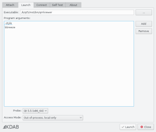
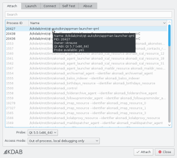
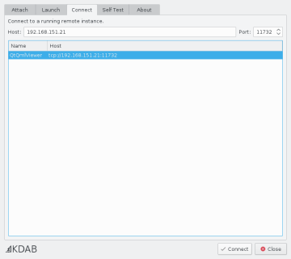
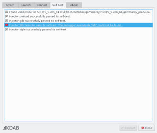

The graphical launcher of allows you to connect GammaRay to a target in application in three different ways:
The graphical launcher can be started as follows:
The Launch tab of the graphical launcher allows you to start new applications and inject GammaRay into them. You just have to select an applcation from the list at the top, and specify command line arguments in the field below.

GammaRay automatically selects the best matching probe for the target application. You can verify this in the combo box at the bottom of the page. If GammaRay could not find a compatible probe, launching fails.
The Attach tab of the graphical launcher allows you to attach to an application that is already running, and inject GammaRay into it.
The process list shows all local Qt-based processes that are potential targets. For each of them, GammaRay tries to determine the exact Qt version they are using and list only those that has a compatible probe available.
A tooltip in the process list shows detailed information about the Qt version and used probe for each process.

The Connect tab of the graphical launcher allows you to connect to a target on a remote device that has already been injected with GammaRay. This is mainly useful when working with embedded devices.
GammaRay tries to automatically discover viable targets on your local network, these are displayed in the list view on the Connect page, and can be used by selecting the corresponding items. Discovered targets using an incompatible GammaRay version will be shown but will be disabled for selection.
Should GammaRay not be able to discover the desired target automatically, the network address of the target can also be specified manually in the entry field on the top. This might be necessary depending on your local network setup.

Opening the Self Test tab makes GammaRay verify its installation and identify problems (if any). The results are displayed on this page.
